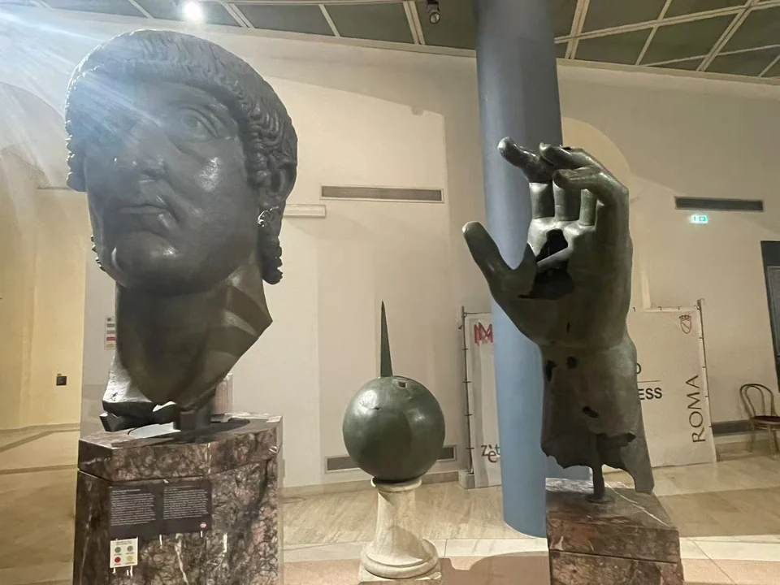
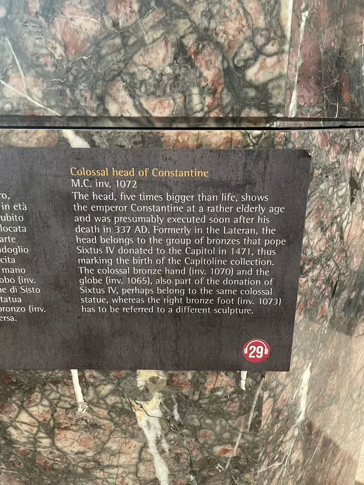
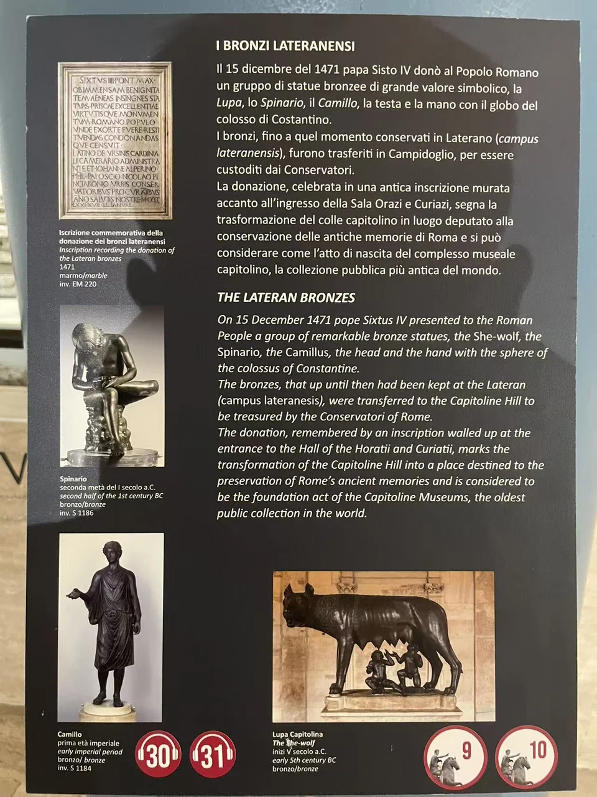
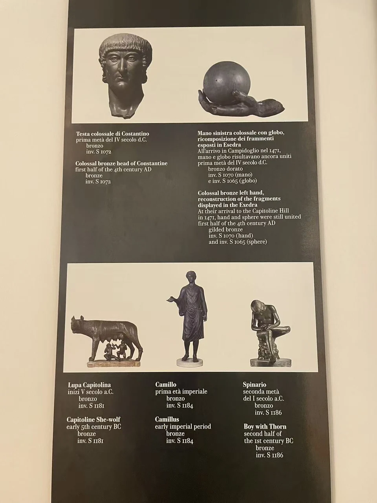

BRONZE / B03
君士坦丁巨像头像、左手与球体陈列组
头像、左手与球体共享一个展柜，却各有编号。先看巨大的眼睛与手，再想它们曾经面对怎样的观看距离。

- 年代
- 公元4世纪
- 材料
- 青铜
- 形制
- 巨像残件组
- 收藏与观看
- 卡比托利欧博物馆 · 罗马
- 馆藏号
- 头像 MC1072；左手 MC1070；球体 MC1065
远处也能看见的面容
头部的力量来自宽阔的面、突出的眼睛和紧凑的发帽。它与马可·奥勒留层叠的卷发不同，但皱纹、眼袋和下垂的面颊仍使这张脸具有年龄感。馆方把发间孔洞联系到原来的冠饰，并说明今天承托头像的颈部为现代配作。 [33]
这些铜像遗存曾保存于拉特朗，1471年随西斯笃四世的捐赠进入卡比托利欧收藏。它们既属于晚期皇帝的纪念形象，也参与了近代博物馆形成的历史。 [33]
同柜的三件遗存
头像为MC1072，左手为MC1070，球体为MC1065。馆方研究目录指出，手、球体与头像存在铸造特征上的差别，原配关系仍需讨论。因此，这里以同一观看组联系三件遗存，而不复原它们未经确认的组合姿态。 [14] [15]
三个残件，让纪念物的尺度重新可感。
换一个角度

现场展签与背景说明



资料与来源
断代、归属与收藏资料
主年代采用公元4世纪。现场说明还提出头像可能作于君士坦丁337年去世后不久；这是一种更具体的解释，并非已经确定的制作年份。头像与大理石巨像残件是不同作品。
基本资料亦参见本页现场展签；照片中的细节与馆方解释分别叙述。